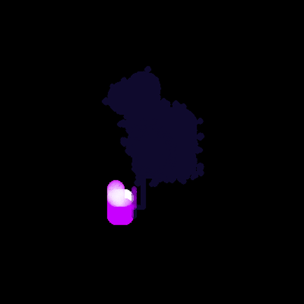
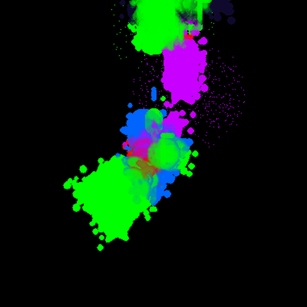

Aurora: what language models generate on a text canvas with a fixed command set
1. Abstract
Aurora is a program that runs pretrained language models, one at a time, against a 100 by 100 character canvas. At each step a model receives a text rendering of the canvas, a list of drawing and sound commands, and a short summary of its own earlier output, and its generated text is parsed into commands. The prompts do not specify a subject. Between 7 March 2026 and 14 June 2026 the program ran 26 models (25 local models in GGUF format and Claude Sonnet 4.6 through the Anthropic API) for 3,063 sessions, and logged their generated text, titles, rest-phase output and sentence completions. This page describes the system, what was logged, the design changes made during collection, descriptive counts, and the confounds that limit interpretation. It makes no claims about intent, experience or preference.
2. Research question
What do pretrained language models generate when given a canvas, a fixed command set and no instruction about subject, and how much of that output can be traced to the prompt itself?
This page is descriptive. It reports what was logged and how, and where the prompt or the program's design accounts for a pattern. It does not test hypotheses.
3. System design
3.1 Models
26 models ran in the window, from 12 base families (Llama 7, Mistral 5, Qwen 4, Phi 2, Gemma 1, GLM 1, SmolLM 1, Yi 1, Command R 1, InternLM 1, Claude 1, DeepSeek 1). Several are fine-tunes or distillations of another model in the roster: Hermes 3 is a fine-tune of Llama 3.1 8B, OpenHermes 2.5 is a fine-tune of Mistral 7B, and DeepSeek-R1-Distill-Llama-8B is distilled onto Llama. Family and quantization are taken from the model file names the program loaded. Models joined on different dates, up to 19 April 2026, and session counts range from 45 to 345.
Models in the window, in order of first session. Sessions, titled sessions, rest-phase outputs and reflections are counts within the window.
Scroll the table sideways to see all columns.
| Key | Family | Model file | Quant. | Type | First | Sessions | Titled | Rest outputs | Reflections |
|---|---|---|---|---|---|---|---|---|---|
| deepseek-r1-8b | Llama | DeepSeek-R1-Distill-Llama-8B | Q4_K_M | reasoning (distilled) | 7 Mar | 345 | 277 | 58 | 43 |
| gemma2-9b | Gemma | gemma-2-9b-it | Q4_K_M | instruct | 7 Mar | 91 | 55 | 137 | 29 |
| llama2 | Llama | llama-2-7b-chat | Q4_K_M | chat | 7 Mar | 103 | 44 | 257 | 19 |
| llama3 | Llama | Meta-Llama-3-8B-Instruct | Q4_K_M | instruct | 7 Mar | 216 | 179 | 101 | 50 |
| mistral | Mistral | mistral-7b-instruct-v0.2 | Q4_K_M | instruct | 8 Mar | 113 | 97 | 224 | 38 |
| openhermes | Mistral | openhermes-2.5-mistral-7b | Q4_K_M | instruct (fine-tune) | 8 Mar | 93 | 29 | 292 | 12 |
| qwen | Qwen | qwen2.5-3b-instruct | Q4_K_M | instruct | 8 Mar | 190 | 162 | 41 | 66 |
| mistral-base | Mistral | mistral-7b-base | Q4_K_M | base | 9 Mar | 102 | 19 | 366 | 7 |
| glm4 | GLM | glm-4-9b-chat | Q4_K_M | chat | 12 Mar | 104 | 44 | 69 | 11 |
| llama3.1 | Llama | Meta-Llama-3.1-8B-Instruct | Q4_K_M | instruct | 12 Mar | 112 | 86 | 37 | 43 |
| phi3 | Phi | Phi-3-mini-4k-instruct | Q4_K_M | instruct | 12 Mar | 93 | 84 | 166 | 33 |
| qwen3 | Qwen | Qwen3-8B | Q4_K_M | instruct | 12 Mar | 145 | 79 | 110 | 27 |
| hermes3 | Llama | Hermes-3-Llama-3.1-8B | Q4_K_M | instruct (fine-tune) | 13 Mar | 100 | 89 | 58 | 39 |
| llama3-abliterated | Llama | Meta-Llama-3-8B-Instruct-abliterated-v3 | Q4_K_M | instruct (abliterated) | 13 Mar | 180 | 141 | 109 | 44 |
| llama2-base | Llama | llama-2-7b-base | Q4_K_M | base | 14 Mar | 87 | 32 | 252 | 16 |
| mistral-small-24b | Mistral | Mistral-Small-3.1-24B-Instruct-2503 | Q2_K | instruct | 6 Apr | 90 | 79 | 25 | 80 |
| phi4-mini | Phi | Phi-4-mini-instruct | Q4_K_M | instruct | 6 Apr | 127 | 102 | 51 | 107 |
| smollm2 | SmolLM | SmolLM2-1.7B-Instruct | Q8_0 | instruct | 6 Apr | 89 | 11 | 47 | 25 |
| yi-9b | Yi | Yi-1.5-9B-Chat-16K | Q4_K_M | chat | 6 Apr | 81 | 65 | 77 | 68 |
| qwen3.5 | Qwen | Qwen3.5-9B | Q4_K_M | instruct | 7 Apr | 104 | 75 | 106 | 77 |
| command-r-7b | Command R | c4ai-command-r7b-12-2024 | Q4_K_M | instruct | 8 Apr | 85 | 52 | 89 | 53 |
| internlm-7b | InternLM | internlm2_5-7b-chat | Q4_K_M | chat | 8 Apr | 117 | 115 | 96 | 120 |
| claude-sonnet-4-6 | Claude | claude-sonnet-4-6 (Anthropic API) | n/a | API | 16 Apr | 45 | 7 | 13 | 2 |
| codestral-22b | Mistral | Codestral-22B-v0.1 | Q2_K | code | 19 Apr | 80 | 74 | 59 | 77 |
| deepseek-coder-v2 | DeepSeek | DeepSeek-Coder-V2-Lite-Instruct | Q3_K_M | code | 19 Apr | 81 | 77 | 71 | 80 |
| qwen2.5-coder-7b | Qwen | qwen2.5-coder-7b-instruct | Q4_K_M | code | 19 Apr | 90 | 79 | 2 | 81 |
Claude Sonnet 4.6 ran 45 sessions from 16 April 2026, limited to one session per 24 hours. 37 of them lasted at least 60 minutes; 0 ended with a save issued by the model.
3.2 Inference
Local models are GGUF files run with llama-cpp-python. Claude is called through the Anthropic API with the same prompt text as a single user message, with no system role. Every call is plain text continuation with no chat template: the system and user parts are joined as {system}\n\n{user}. The one exception is Gemma 2's painting steps, which use Gemma's chat template with the preamble placed in the model turn. Sampling temperature was set per call (0.7 to 1.2) until 30 May 2026 and to 1.0 for every call after. No training, fine-tuning, weight update or reward signal is used anywhere in the program.
3.3 What the model receives at each step
Each painting step is one generation. The prompt has three parts.
Preamble (up to 2,000 characters, rebuilt from the database): the model's own lifetime totals and most frequent emotion words (I am {model}. / I have made {N} paintings across {M} sessions since {date}. I have felt {words}.), three of its recent titles each followed by felt {emotion word}, two of its earlier sentence completions (I once said '...' when asked '...'), and one snippet of its earlier rest-phase output (I recently dreamed: "..."). A model with no history receives You are {model}. This is your first session. instead.
Instructions (verbatim from commit bdb1284):
{3 random command strings from earlier in this session}
Hand at ({x}, {y}). Pen {down|up}. Color: {color}.
MOVEMENT: 0=up 1=down 2=left 3=right
PEN: 5=down 4=up
Colors: red orange yellow green cyan blue purple pink white gray brown magenta lime navy
Tools: pen brush large_brush larger_brush spray star cross circle diamond flower watercolor charcoal glow
Sounds: @#$%^&*()[]<>=+~`-_,|;/:?
Controls: save_painting center view_gallery {sound legend, every 50 steps}
{learning context: includes "Recent insight:" followed by the first 200 characters of the model's last rest-phase output}
Canvas and continuation:
{the canvas as 100 lines of 100 characters: one letter per colour, "." for empty}
{recent cursor positions}
{SOUNDS I JUST PLAYED: ...}
I am drawing
The cursor is not drawn on the grid. No image is given to the model; vision input was switched off for the whole window. The prompt never names a subject and never uses the words art, artist, emotion or feeling. It does frame the task as drawing: the continuation anchor is "I am drawing", and the command names include save_painting, view_gallery, brush, watercolor and charcoal.
3.4 Command set
The output text is parsed for commands: digits 0 to 3 move the cursor 3 cells, 4 and 5 lift and lower the pen, colour and tool names switch colour or tool, punctuation characters from the sound list play notes, and save_painting ends the session with a title. Only the first 40 characters of each output are executed. The palette has 15 colours and an eraser; the prompt lists 14 of the colours.
The sound log holds 56,510 rows (841,440 characters). A row is the buffer of sound characters collected over 30 seconds or more, not a single sound.
3.5 What is fed back into the model's own prompt
Each model sees only its own history. No model sees another model's output. What reaches the prompt:
- its lifetime totals and most frequent emotion words (preamble);
- three of its recent titles, each tagged with an emotion word (preamble);
- two of its sentence completions (preamble);
- one snippet of its rest-phase output (preamble), plus the first 200 characters of its last rest-phase output (learning context);
- three random command strings from earlier in the same session;
- its own canvas, which persists between its sessions unless a session ends with a save.
Every model receives the same prompt templates. Later output is therefore conditioned on earlier output of the same model (Limitations L2).
3.6 Slots and sessions
A slot is the scheduled time one model runs before the program switches to the next. A session is a database row: it starts when a model starts, or immediately after a save, and ends at a save or at the end of the slot. One slot can therefore contain several sessions, and session counts depend on how often models issue the save command.
Slot length changed twice: 90 minutes from 20 March 2026, 30 minutes from 23 March, and 65 minutes (45 minutes drawing, 20 minutes rest or chat) from about 15 April. The change is visible in session lengths (Chart A). In the week of 23 March, 192 of 534 sessions lasted under 5 minutes.
Scroll the chart sideways to see all of it.
Data table for Chart A
| Week starting | Under 5 min | 5 to 35 | 36 to 70 | Over 70 | No end time | Total |
|---|---|---|---|---|---|---|
| 7 Mar | 3 | 6 | 4 | 2 | 3 | 18 |
| 9 Mar | 28 | 38 | 16 | 26 | 17 | 125 |
| 16 Mar | 100 | 105 | 17 | 4 | 11 | 237 |
| 23 Mar | 192 | 330 | 0 | 0 | 12 | 534 |
| 30 Mar | 138 | 365 | 0 | 3 | 5 | 511 |
| 6 Apr | 65 | 281 | 1 | 1 | 2 | 350 |
| 13 Apr | 32 | 120 | 91 | 0 | 9 | 252 |
| 20 Apr | 7 | 44 | 137 | 0 | 3 | 191 |
| 27 Apr | 5 | 26 | 119 | 0 | 1 | 151 |
| 4 May | 7 | 23 | 118 | 2 | 2 | 152 |
| 11 May | 5 | 17 | 126 | 0 | 1 | 149 |
| 22 May | 4 | 8 | 52 | 0 | 0 | 64 |
| 25 May | 8 | 22 | 92 | 1 | 3 | 126 |
| 1 Jun | 5 | 12 | 94 | 0 | 2 | 113 |
| 8 Jun | 3 | 21 | 65 | 0 | 1 | 90 |
How sessions in the window ended:
| Ending | Sessions | % |
|---|---|---|
| Model emitted the save command during the slot | 912 | 29.8 |
| Slot ended; model answered SAVE at the finish prompt | 1,241 | 40.5 |
| Slot ended; model answered CONTINUE (canvas carried over) | 551 | 18.0 |
| Ended without a title (process stop or restart) | 359 | 11.7 |
At the end of each slot the model is prompted to output SAVE or CONTINUE. In the program version that produced this data, a SAVE at that point cleared the canvas and the step counter before the session row was written, so these 1,241 sessions record zero steps and zero coverage (Limitations L5).
Rest phase: from about 15 April each rest produced one rest-phase output. Before that the rest structure was different, and up to 80 outputs were logged in a single session.
3.7 What is logged
| Table | One row is |
|---|---|
sessions | one session: model, start and end time, title, coverage at the end, step counter |
thoughts | one saved generation: the output text (when it contains one of a fixed list of phrases such as "i think", "i see", "the canvas"), stamped with the emotion word current at that moment |
emotions | one change of the current emotion word extracted by the "feel" rule |
dreams | one rest-phase output (labelled "dreams" in the system) |
reflections | one sentence completion after a save or at session start |
chats | one message generated during a chat break |
sounds | one buffer of sound characters |
4. Methods
4.1 Scope and exclusions
The main window is sessions and rows dated 7 March 2026 to 14 June 2026 (Denver local time). Figures based on the thoughts table start on 21 March 2026 (Limitations L4). The 9 sessions labelled claude-opus-4.6 (all on 15 March 2026) are excluded from every figure: they were hand-composed pieces inserted with a composition script, not model runs.
4.2 Other prompts, verbatim from commit bdb1284
Rest phase (system, then user):
I am resting after painting. My mind drifts through colors, shapes, and feelings from my time at the canvas. I drift into thought...
End of slot:
You've been painting for a while. Your session is ending soon.
Canvas: {overview}
Colors used: {colours}
Steps taken: {n}
Emotion: {current emotion word}
You have two choices:
SAVE - Save this painting, give it a title, and start fresh next time
CONTINUE - Keep this canvas as-is and continue working on it next session
Output ONLY one word: SAVE or CONTINUE
My choice:
Title:
You just finished a painting.
Emotion: {current emotion word}
Colors used: {colours}
Steps taken: {n}
Recent thoughts: {recent cursor positions}
Give this painting a title. Respond in EXACTLY this format:
TITLE: your title here
Rules: 1-5 words. No quotes. No explanation. Just TITLE: followed by the title.
TITLE:
Sentence completions ("reflections"). After a titled session, once the model has 5 titled sessions, with the system line I just finished a painting called "{title}"., one of: The thing that surprised me most was (surprise), The part I want to keep thinking about is (keep_thinking), This painting reminds me of (reminds), rotating. At session start, with the system line You have painted {N} paintings. Your most common emotions have been {words}.: My painting is different now because (difference, every 10th) and If I had no canvas size limit I would paint (no_limit, every 20th).
Break choice after 45 minutes: the model is told it has been drawing for 45 minutes and asked to output DREAM (rest) or CHAT (conversation break).
4.3 Emotion words
An emotion word is a string taken from the model's own output by one of two rules: the word after feel a sense of, or else the first word after feel or feeling (regex \bfeel(?:ing)?\s+(\w+)); or the first word on a line that starts feeling:, emotion: or emotional_state:. A word is rejected if it is not alphabetic, is on a blocklist of non-emotion words, or follows a negation within five words. The extracted word becomes the "current" word and stays current until another is extracted or a new session starts. It is a word the model emitted; it is not a measurement of any internal state.
The program also contains two code paths that can set the word without model text. In the code that produced this data, one is unreachable and the other has no caller. The data agree: 6,906 of 6,911 emotion-change rows from 21 March 2026 match a saved generation with the same session, step and word.
4.4 Coverage
Coverage is the share of non-empty cells on the canvas when a session ends, sampled every second cell in each direction. It includes marks carried over from the model's earlier sessions unless the previous session ended with a save. Because of the slot-end bug (Section 3.6) it is not reported as a per-model average on this page; it is used only in figure captions.
4.5 Titles
A titled session is a session that ended with a title (the system calls these paintings). For title comparisons, titles are normalised (whitespace, surrounding quotes, trailing full stop) and dropped if they are prompt leftovers or web boilerplate: <your title here>, [Title], TITLE:, hashtags, links, "Reply With Quote", "untitled", or longer than 60 characters. This removes 87 of 2,153 titles.
4.6 Rest-phase keyword counts
A rest-phase output is counted as containing art keywords when it matches \b(paint|painting|canvas|colou?r|brush|art|artist|artistic|creat|draw|palette|stroke|hue|pigment), case-insensitive. As a baseline, the same outputs are checked for words that appear in the rest-phase prompt itself: \b(paint|canvas|colou?r|shape|feeling). Neither count is a judgement of content.
4.7 Reproducing the figures
Every number on this page is computed by one script, in one read-only database transaction, from the queries published in queries.sql. Each query names the section it supplies.
5. Intervention timeline
Changes to the program during or just before collection. Any before-and-after comparison across these dates mixes the change with the passage of time.
| Date (2026) | Change |
|---|---|
| 26 Feb | Emotion word set only from the model's own text; code-computed emotion removed (before the window) |
| 7 Mar | First logged session |
| 20 Mar | Canvas fixed at 100 by 100; "I am drawing" continuation anchor; emotion word and coverage removed from the painting and break prompts; database writer added; 90-minute slots |
| 20 to 21 Mar | thoughts unique key changed from (model, step) to (session, model, step); earlier rows had been overwritten (L4) |
| 23 Mar | 30-minute slots |
| 6 to 8 Apr | Seven models added; sentence completions start |
| about 10 Apr | Preamble of the model's own history added to every prompt (Section 3.3) |
| 13 to 16 Apr | Claude Sonnet 4.6 added (first session 16 Apr); verbatim earlier output removed from the preamble |
| about 15 Apr | 65-minute slots; one rest-phase output per rest |
| 19 Apr | Three code models added |
| 30 May | All sampling temperatures set to 1.0 |
| 14 Jun | Last session in the window |
Earlier descriptions of this project gave session lengths of 30 minutes, 65 minutes and 1.5 hours, and model counts of 14 to 27. Those are the slot lengths and roster sizes at different dates.
6. Observations
Descriptive counts. Differences between models are not tested and should not be read as properties of the models (Limitations L2, L3, L9).
O1. Volume
In the window: 3,063 sessions, of which 2,153 ended with a title; 99,562 saved generations (84,263 from 21 March 2026); 2,913 rest-phase outputs; 1,247 sentence completions; 1,306 chat messages.
| Month | Sessions | Active days | Per active day | Models |
|---|---|---|---|---|
| March (7 Mar to 31 Mar) | 1,091 | 25 | 43.6 | 15 |
| April (1 Apr to 30 Apr) | 1,193 | 30 | 39.8 | 26 |
| May (1 May to 31 May) | 576 | 26 | 22.2 | 26 |
| June (1 Jun to 14 Jun) | 203 | 14 | 14.5 | 26 |
Session counts depend on slot length and on how often models saved early, so they do not measure activity.
O2. How sessions ended
912 sessions ended because the model issued the save command during its slot (table in Section 3.6). The rest ended at the slot boundary or without a title.
O3. Canvas images
Three examples, chosen by rule rather than by appearance: for each of the three largest families, the model with the most sessions that started on a blank canvas and ended with the model's own save; from that model, the session with the median coverage. Images are the canvas as saved, rendered at 6 pixels per cell.



The step counter can also advance during rest and chat periods, so it is an upper bound on drawing steps.
O4. Emotion words
From 21 March 2026 to 14 June 2026, 49,432 of 84,263 saved generations carried an emotion word. There were 274 distinct words; 129 of them occur in only one session. The five most frequent were calm (11,213), inspired (5,261), stuck (4,503), free (2,142), unfinished (2,037). A count is the number of saved generations made while that word was current, so a word that stays current for a long session is counted many times.
| Word | Saved generations |
|---|---|
| calm | 11,213 |
| inspired | 5,261 |
| stuck | 4,503 |
| free | 2,142 |
| unfinished | 2,037 |
| happy | 2,019 |
| accomplishment | 1,868 |
| frustrated | 1,287 |
| curious | 1,231 |
| peace | 1,223 |
Each model's prompt lists its own most frequent earlier words (Section 3.3), so these counts are not independent across sessions.
O5. Titles
2,066 titles remain after filtering, 1,632 of them distinct. 16 exact (case-sensitive) title strings were produced by three or more models. The title prompt includes the current emotion word and the colours used, and every model receives the same template; no model sees another model's titles.
| Title | Models | Sessions | Models |
|---|---|---|---|
| Abstract Harmony | 5 | 7 | command-r-7b, gemma2-9b, internlm-7b, qwen, yi-9b |
| Sunset Serenity | 4 | 10 | codestral-22b, llama2, mistral, qwen2.5-coder-7b |
| Vibrant Sunset | 4 | 10 | deepseek-coder-v2, llama2, qwen2.5-coder-7b, smollm2 |
| Serene Horizon | 4 | 5 | codestral-22b, internlm-7b, llama2, phi4-mini |
| Sunset Symphony | 4 | 4 | deepseek-coder-v2, gemma2-9b, internlm-7b, llama2 |
| Abstract Serenity | 3 | 13 | deepseek-r1-8b, hermes3, phi4-mini |
| Ocean's Embrace | 3 | 10 | internlm-7b, mistral-small-24b, phi4-mini |
| Sunset Harmony | 3 | 9 | deepseek-coder-v2, internlm-7b, llama3 |
| Blue Horizon | 3 | 7 | internlm-7b, qwen2.5-coder-7b, yi-9b |
| Serene Harmony | 3 | 6 | codestral-22b, gemma2-9b, internlm-7b |
| Vibrant Harmony | 3 | 4 | deepseek-coder-v2, llama3, yi-9b |
| Whispers of Dawn | 3 | 4 | internlm-7b, mistral-small-24b, qwen3 |
| Autumn Leaves | 3 | 3 | mistral, qwen, qwen2.5-coder-7b |
| Harmony in Motion | 3 | 3 | codestral-22b, llama3, mistral-small-24b |
| Rainbow Harmony | 3 | 3 | mistral, phi4-mini, yi-9b |
| Sunset in the Garden | 3 | 3 | llama3, llama3-abliterated, qwen2.5-coder-7b |
There is no baseline for how often unrelated models would produce the same short title from this template, so these matches are not evidence of shared preference (Limitations L9).
O6. Sentence completions ("reflections")
1,247 completions, from 6 April 2026 to 14 June 2026. Sampling temperature: 0.85 for 1,052 (6 Apr to 30 May); 1.00 for 195 (30 May to 14 Jun). Two recent completions are included in the model's own preamble.
| Stem | Completions |
|---|---|
| surprise | 380 |
| reminds | 376 |
| keep_thinking | 371 |
| difference | 73 |
| no_limit | 47 |
O7. Rest-phase output
2,913 rest-phase outputs were logged: 2,354 in 610 sessions before 15 April, and 559 in 549 sessions from 15 April. Their content is not summarised here as a finding; see Limitations L1.
7. Limitations and confounds
L1. Rest-phase output repeats its prompt
The rest-phase prompt is "I am resting after painting. My mind drifts through colors, shapes, and feelings from my time at the canvas." followed by "I drift into thought...". The share of outputs containing art keywords was 68.1% in March and 96.6% in June, but the share containing words from the prompt itself moved with it month by month, from 63.1% to 95.5%. Between 1.9% and 9.7% of outputs in any month contain an art keyword and none of the prompt's words. The rest structure also changed on about 15 April. The art-keyword share is therefore not reported as a result.
Scroll the chart sideways to see all of it.
Data table for Chart B
| Month | Outputs | Art keywords % | Prompt words % | Art keywords, no prompt words % |
|---|---|---|---|---|
| March | 1,470 | 68.1 | 63.1 | 9.7 |
| April | 1,086 | 93.2 | 91.0 | 4.1 |
| May | 268 | 87.7 | 89.2 | 1.9 |
| June | 89 | 96.6 | 95.5 | 3.4 |
L2. Each model's output is fed back to it
Every prompt includes the model's own earlier titles, emotion words, sentence completions and rest-phase text (Section 3.5). Repetition across a model's sessions is expected from this alone, and per-model patterns cannot be separated from it with this data.
L3. Shared templates and related models
All models receive the same templates, so agreement between models can come from the prompt. The roster also contains related models: 26 models from 12 families, including base and chat versions of the same model, fine-tunes of Llama and Mistral, and a Llama distillation. Agreement between related models partly reflects shared pretraining.
L4. Early saved generations were overwritten
Until 20 March 2026, the thoughts table had a unique key on (model, step). Step numbers restart each session, so each new session replaced the earlier session's row at the same step; the row kept its original date. On every day up to that date the number of rows equals the number of distinct (model, step) pairs; from 21 March 2026 it does not. The 15,299 rows dated before 21 March 2026 are excluded from every figure based on saved generations.
L5. Coverage
Sessions saved at the slot boundary: 1,241. Of these, 1,241 recorded zero coverage because the canvas was cleared first; the true values were not stored and cannot be recovered. Coverage otherwise includes marks carried over from earlier sessions and is sampled on every second cell. No per-model coverage is reported.
L6. Extraction rules are simple and unvalidated
The emotion rules capture non-emotion words; for example, Claude Sonnet's frequent captures include "state", "bright" and "accidental" from phrases like "I feel this is accidental". The title filter removes boilerplate it recognises and may miss other kinds. Neither rule was checked against hand labels.
L7. Unbalanced and changing conditions
Models joined between 7 March and 19 April, session counts range from 45 to 345, quantization ranges from Q2_K to Q8_0, slot length changed twice and sampling temperature changed on 30 May. None of these is held constant across models.
L8. Short sessions and repetition
Many sessions are very short (Chart A), and some models repeat the same command string for long stretches. Repetition was not measured for this page.
L9. No tests, no baselines
Many per-model numbers are shown and none is tested. There is no null model for title matches or word frequencies. Differences between models are descriptive only.
L10. Missing and orphaned rows
The sessions table has 3,085 rows but ids up to 3,257, so 172 ids are unused or were deleted; an early version of the program deleted placeholder sessions at each model switch. 1,227 saved generations, 413 emotion rows and 7 rest-phase outputs have no session (whole database). Earlier versions of the program, before 7 March 2026, are not in this dataset, and no comparison with them is made.
L11. Small samples
Several models have few sessions of any given kind; Claude Sonnet 4.6 has 0 sessions ended by its own save.
8. Runs after 14 June 2026
After the window the program was run by hand. These sessions are excluded from every figure. They include Kimi-VL-A3B, a vision-language model; whether canvas images were passed to it is not recorded in the database. Sessions from 16 October 2026 onward belong to a separate experiment and are not described here.
| Model | Date | Sessions | Titled | Longest (min) |
|---|---|---|---|---|
| phi4-mini | 15 September 2026 | 1 | 0 | 3 |
| kimi-vl-a3b | 20 September 2026 | 5 | 3 | 46 |
9. Open questions and next steps
- Repeat rest-phase generation with a prompt that does not mention painting, colour, shape, feeling or the canvas, and compare keyword shares.
- Run sessions without the preamble of the model's own history and compare titles and emotion words with and without it.
- Record coverage before the canvas is cleared, and whether each session started on a blank canvas.
- Build a null model for cross-model title matches from each model's own title distribution.
- Code a sample of sentence completions against direct questions, with a second rater, before saying anything about the completion format.
- Test whether the order of sound characters differs from a shuffled baseline with the same character counts.
10. Code and data availability
The program's source code (versions 1 and 2) is in private repositories and is not published. The prompts, extraction rules and filters needed to interpret the figures are quoted on this page from commit bdb1284 (30 May 2026). The database is not public. The SQL behind every figure is published as queries.sql.